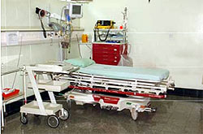

Here you will be able to find all the relevant information you need about Kingston Hospital NHS Trust.
Kingston Hospital NHS Trust provides a full range of diagnostic and treatment services to approximately 320,000 people locally. We are proud of our reputation as the largest single site District General Hospital in London and our Maternity Unit is the second biggest in London. In a National survey, we were rated as the Best Maternity Service in London by, the National Health Watchdog, the Care Quality Commission.*
Improving our patients� experience � invitation to our �In our shoes� sessions

At Kingston Hospital NHS Trust our ambition is for all of our patients to experience care that is safe, compassionate and of the highest quality. As a part of this we are building on work we have done so far to improve our patients� experience, by listening to the actual experiences and views of our patients. We would like to hear your views about what was good about the care you or your loved one received and what you feel needs improving. To do this, we are running a series of �In Your Shoes� events in November 2011. Each workshop will last around 2 hours. Patients who attend will be able to:
Date: 02nd Feb 2023